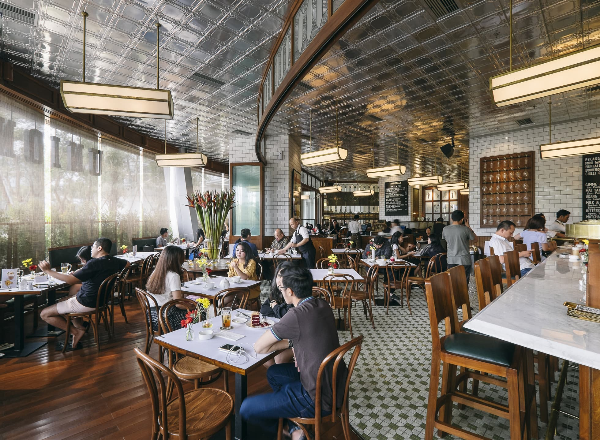
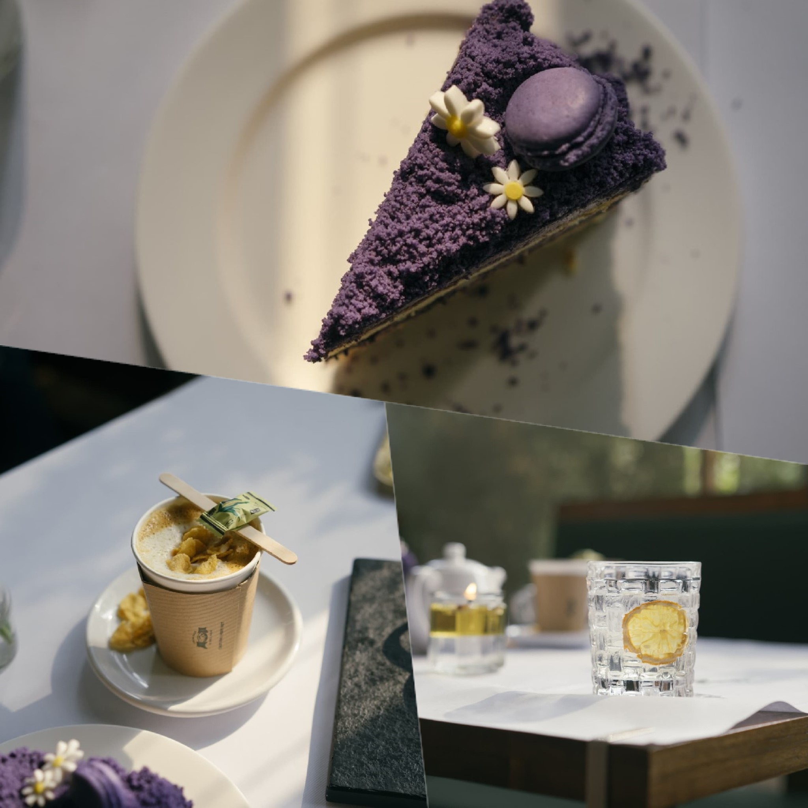
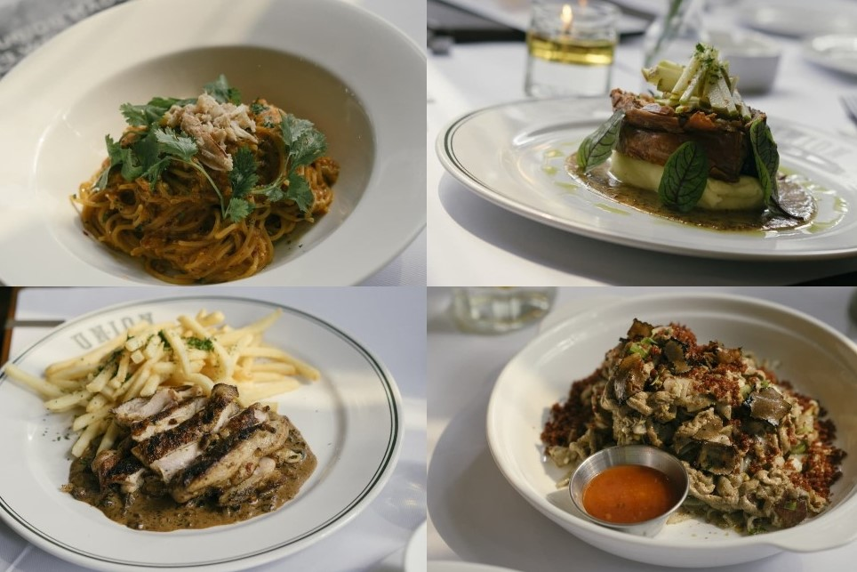

Union is one of those establishments in Jakarta that really needs no introduction. And that familiarity is comforting because you know exactly what to expect from them. After establishing itself in Plaza Senayan, Pondok Indah Mall and Grand Indonesia, this jewel in the crown from Union Group is finally heading north for it’s fourth branch in PIK Avenue Mall.
Residents in North Jakarta now don’t have to travel far for their famous Red Velvet cake anymore. Plus with the addition of their new Ube Velvet cake, it’ll be hard to make a choice between the two. But of course placing an order for the two solves that dilemma easily.

Don’t be quick to dismiss the food as just a repeated list from previous establishments though. New pork-based options have been added to the menu and they definitely deserve your attention, such as their palatable Nasi Babi Garing and Crispy Pork Belly. Apart from that, Union has also taken the opportunity to elevate some of the common street food dishes. To wit, Kway Teow is served with black truffle and Bakmi Ayam comes with foie gras.

The establishment rarely sees a quiet moment and is always packed from day to night. That’s why it’s best to make a reservation or be prepared to wait. While almost all diners come in groups, it’s not a bad idea to dine alone by the bar too. It’s definitely favourable to end your meal with a couple of their house cocktails, which offers the effect of turning the chatters around you into an enjoyable hum.
Suffice to say, Union is quickly becoming one of PIK Avenue Mall’s most prolific main draw.